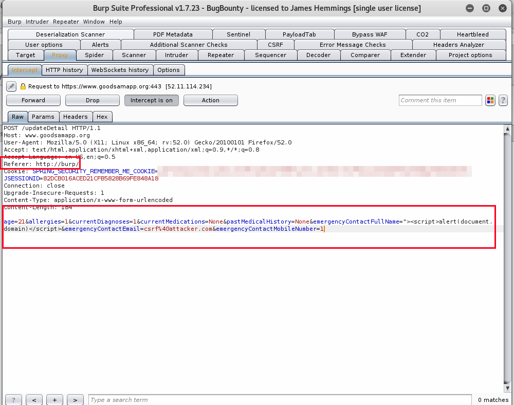

7 minutes
GoodSAM App - CSRF/Stored XSS Chain Full Disclosure
I’ve been a user of the mobile/web application named “GoodSAM App” which is an application where the Ambulance service in London or the East Midlands can dispatch “Responders” who are trained in Basic Life Support (BLS) and can be dispatched to cardiac arrests or other priority calls and users at emergencies can also request a “Responder”. Now this application is absolutely brilliant in the nature of what it does and I fully support them.
Despite this however, I did find two vulnerabilities within the application that may have been overlooked. Specifically Cross Site Request Forgery (CSRF) within the “Account Profile” page, along with Cross Site Scripting (XSS) within the same page, the account profile page being loaded upon login.
Now typically, CSRF and XSS issues on their own are not that much of a critical vulnerability in the grand scheme of things, however in this instance it was possible to chain both CSRF/Stored XSS vulnerabilities to set the XSS payload within the account profile fields and then steal the user cookie every time they login or view the page.
Finally, as the GoodSAM Data Protection section said they take data protection seriously, I thought I would not have any problems getting these vulnerabilities resolved under responsible disclosure, however I was wrong on this occasion and have had to release the information. (See Disclosure Issues section).
“We take your data protection extremely seriously. We are registered with the Information Commissioners Office (no: ZA094052) and our technology team take the security of our data and servers very seriously. "
Vulnerability Details
The first vulnerability discovered was Cross Site Request Forgery (CSRF) within the account profile page, which per OWASP documentation is defined as [4][5]:
Cross-Site Request Forgery (CSRF) is an attack that forces an end user to execute unwanted actions on a web application in which they’re currently authenticated. CSRF attacks specifically target state-changing requests, not theft of data, since the attacker has no way to see the response to the forged request. With a little help of social engineering (such as sending a link via email or chat), an attacker may trick the users of a web application into executing actions of the attacker’s choosing. If the victim is a normal user, a successful CSRF attack can force the user to perform state changing requests like transferring funds, changing their email address, and so forth. If the victim is an administrative account, CSRF can compromise the entire web application.
The second vulnerability discovered was Stored Cross Site Scripting (XSS) within the same account profile fields, which per OWASP documentation is defined as [1][2][3]:
Stored attacks are those where the injected script is permanently stored on the target servers, such as in a database, in a message forum, visitor log, comment field, etc. The victim then retrieves the malicious script from the server when it requests the stored information. Stored XSS is also sometimes referred to as Persistent or Type-I XSS.
Account Profile - Cross Site Request Forgery (CSRF):
The first vulnerability was Cross Site Request Forgery within the account profile update page, which is demonstrated below. Take note of the email address and email entered within it.
The next step was to proxy the request with Burp Suite and then send the request to Burp Suite Professional’s CSRF PoC generator, by selecting “Action –> Engagement Tools –> CSRF PoC Generator”. As shown below, the name and email address fields were modified with attacker account data, including an XSS payload within the name.
Next the “Test in browser” option was selected and the URL pasted in the web browser. The request was then intercepted by Burp Suite showing the referrer as “http://burp/” and not “www.goodsamapp.org”. As shown the attacker data is entered as POST parameters.

The request was then successfully submitted by the attacker CSRF payload, resulting in the XSS payload being entered into the name field and the emergency contact email being modified.
Finally, the “Manage” option is selected and the XSS payload is successfully executed. This means that an attacker can thereby execute arbitrary JavaScript XSS payloads within GoodSAM user accounts if a user clicks on a link, launches a HTML file or even loads an image with the POST request file as source.
As demonstrated this can be deadly, as now an attacker can have access to the users account by stealing the user cookie and then the private medical information located within it. Specifically, the attacker would steal the user cookie on every login, using a cookie theft payload.
Account Profile - Stored Cross Site Scripting (XSS):
The first step was to change the profile field “Emergency Contact Full Name” to "">alert(document.domain)" and then press the “Update Profile” page which results in XSS execution.
As demonstrated below, the JavaScript XSS payload is executed, confirming it is within the web application context (www.goodsamapp.org).
Now you may be wondering, how does the XSS attack work exactly? What am I looking for to find such vulnerabilities. Well specifically in this case, the account profile page loads the data within value fields and the value is set within two speech marks (E.g “VALUE”).
Now due to how HTML works, if you put another " within the payload you will then escape out of the value tag and can inject your own HTML tags within it such as onclick="alert(1)" or by fully escaping the input tag by doing ">alert(1) which is what I did in this case.
Chanining CSRF/XSS Demonstration:
Disclosure Issues:
Previously I have found vulnerabilities within other websites and have happily disclosed them to vendors and/or organisations, resulting in typically a positive or neutral response and the issue being resolved. (See below).
However in this case, as soon as I emailed the proof of concept and technical information I received this response, without asking for further clarification.
I then sent further technical information, proof of concept and a video demonstrating the attack/impact:
GoodSAM then responded to me, further dismissing and ignoring the two vulnerabilities stating that their “Machine Learning” prevents the attacks, yet I have a full video demonstrating a proof of concept.
Finally, after going backwards and forwards without a resolution I asked if they plan on resolving the issues and may I disclose the vulnerabilities on my blog if this is the case and have since left it at that.
Feedback/Suggestions:
My feedback and suggestions to the GoodSAM team, would be to ensure they honour their commitment to taking security seriously [7], even though this vulnerability is not a critical RCE (Remote Code Execution) or severely critical vulnerability, it is still a vulnerability that can attack users via phishing, or other means to achieve full account takeover and compromise of highly sensitive and private medical information, that once stolen is in the wild potentially. Additionally, by taking a defence in depth approach to security, you mitigate the possibility of medium risk vulnerabilities being chained to achieve further levels of access, as well as committing to your statement of “data security”.
Additionally, resolving XSS and CSRF vulnerabilities do not put undue burden on the organisation and can be easily remediated by implementing input sanitization, encoding and filtering along with ensuring POST requests have anti-CSRF or verification tokens, to ensure they are only sent within the site context and not by third party websites [3][5][6].
References:
[1] https://www.owasp.org/index.php/Cross-site_Scripting_(XSS) [2] https://www.owasp.org/index.php/Testing_for_Stored_Cross_site_scripting_(OTG-INPVAL-002) [3] https://www.owasp.org/index.php/XSS_(Cross_Site_Scripting)_Prevention_Cheat_Sheet [4] https://www.owasp.org/index.php/Cross-Site_Request_Forgery_(CSRF) [5] https://www.owasp.org/index.php/CSRF_Prevention_Cheat_Sheet [6] https://www.owasp.org/index.php/Defense_in_depth [7] https://www.goodsamapp.org/dataprotection
Disclosure Timeline:
30th June, 2017 at 23:08 GMT. Email sent requesting security contact information. 14th July, 2017 at 19:51 GMT. No response from first email, vulnerability POC/information sent to three listed email addresses. 14th July, 2017 at 20:07 GMT. Reply received (Technical Director), dismissing vulnerability as non-issue. 14th July, 2017 at 20:26 GMT. Further technical information sent, including video PoC. 15th July, 2017 at 14:58 GMT. Reply received (Technical Director), further dismissing vulnerability. 15th July, 2017 at 15:24 GMT. Further explanation/clarification sent, explaining risks. 17th July, 2017 at 14:12 GMT. Email sent requesting update/checking email was received and permission to disclose, if no intention of resolving issue. 17th July, 2017 at 15:55 GMT. Reply received (Technical Director). Advises I can disclose or notify whoever and that they have no interest talking or speaking to me, unless I can breach their servers and extract data. 17th July, 2017 at 19:30 GMT. Full Disclosure via Blog.
chained-xsscsrf csrf goodsam goodsamapp responsible-disclosure stored-xss web-vulnerabilities xss
1383 Words
2017-07-17 01:00